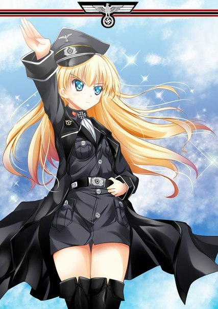

Лена - 7дл - рут
7 дней лета :: Руты :: Лена
Страница 12 из 26 •  1 ... 7 ... 11, 12, 13 ... 19 ... 26
1 ... 7 ... 11, 12, 13 ... 19 ... 26
Re: Лена - 7дл - рут
автор 7dl-kun в Пт 7 Ноя 2014 - 20:57

7dl-kun- Находка для шпиона

- Сообщения : 3026
Дата регистрации : 2014-09-07
Откуда : здесь столько наркоманов?
Re: Лена - 7дл - рут
автор peregarrett в Пт 7 Ноя 2014 - 21:34

peregarrett- Находка для шпиона
- Сообщения : 3264
Дата регистрации : 2014-09-07
Возраст : 36
Re: Лена - 7дл - рут
автор Arlien в Вс 9 Ноя 2014 - 13:52
По-видимому, я тут последний
В этот раз постараюсь не иллюстрировать эмоциальную реакцию среднего славянофила на подобные кульбиты, а придерживаться более-менее объективной позитуры.
- унылый багет славянофила:
Итак, чем плоха сцена.
1.Откровенной, простите мой французский, *нецензурная брань*.
Славя хватает Семена за МПХ. Нет, серьезно? Чтобы что-то там "проверить"?.. причем "сноровисто"? Сноровка значит есть, а понимание, что ничего, кроме потенции, таким образом не проверяется, нету?.. Или просто не для того оно все затеяно?
Вроде как таких помоев на пресловутых 'двощах'("рассадниках контркультуры", цитируя) с их конями и километрами, вылито более, чем достаточно.
Вылито, напомню, на основании полутора сцен, допускающих различные трактовки.
Строго говоря, назвать подобное 'развитие' образа офф-каноном нельзя, все карты на руках у автора, но выбирать из возможных трактовок ту, которая максимально мерзким образом подсвечивает образ?
Просто для того, чтобы реализовать древний-лысый маневр "посоны, паладин-то ненастоящий!11"?
Это банально. В современном творчестве каждый, так его разэдак, ПЕРВЫЙ паладин оказывается главзлодеем, перебежчиком или хотя бы гнусным извращенцем.
Это объективно плохая попытка "придать образу объема". Маневр слишком плоский, чтобы придать чему-то объем.
2. Очередным внесением критического противоречия в образ.
"Самоотверженная активистка", говорите?
"Самоотверженность" это, напоминаю, "самоотвержение", сиречь отказ от своих интересов в пользу чего-то другого.
При этом "самоотверженная активистка" просто "хочет игрушку". Вот это накал чувств, вот это ро... агрх, ладно-ладно, сарказм офф.
В общем, это не называется самоотверженностью, это называется эгоизмом. И то, что получается в итоге, не называется "самоотверженная активистка не без недостатков", а "эгоистичная *нецензурная брань* особа, косящая под активистку".
Потому что в большинстве сюжетообразующих точек (с точки зрения сюжета - в решающие моменты) она ведет себя именно как второе, а не первое.
Чикатило тоже картины писал. Только вот спроси любого - "Кто был Чикатило?", ответят - "Маньяк".
3. Вредом для реиграбельности.
Транзит со Славя-рута вспомните. Лена, вся из себя няша-стесняша-мимими, там умудряется выглядеть чуть ли не выгодней 'хозяйки' рута и довольно неплохо побуждает на "пройти ленарут следующим". Даже ночной выход Лены "выйду ночью в лес с ножом" из ванили более-менее нейтрален.
А вот кто, мне интересно, испытает желание выйти на славя-руты после ее выходов на других рутах? Труселя, разврат, теперь вот это... Получающийся образ привлекательно не выглядит от слова "совсем", и не с "моей точки зрения", обратите внимание, а по объективным маркерам. Изучите на досуге, если вдруг интересно, рейтинги популярности персонажей классических ВН или анимах - обнаружите, что персонажи, экипированные подобными чертами, как "авторская" Славяна, всегда висят где-то на днище, между "овсянка, сээр" и всякой фрикотой.
4. Нерациональным использованием ресурсов образа.
В 7ДЛ уже и так уже есть три "нитаких" основных персонажа. И Алиска у нас не дурновоспитанная быдланка, а несчастная сирота, и Лена не няша-стесняша, а БОЛЬДРАМАВСКРЫВАЕМСЯ, и Мику не болтушка без задней мысли, а восходящая звезда эстрады. Четвертый "нитакой" тут просто уже не к месту - чесслово, хоть кто-то тут должен быть "таким". Нормальным человеком.
И постскриптум. По плану здесь должны быть резкости и переходы на личности, но пока я все это писал, вспомнил, как оно все начиналось... Так что я честно скажу. Не в обиду, правда.
Я в ныне прикрытой темке писал как-то - "не путайте", мол, "творчество с вандализмом". Собственно говоря, после прочтения сей сценки у меня именно это определение в голове и вертится. Вандализм.
Данный мод, разумеется, является вашим доминионом и эксклюзивным полем для творчества, вы имеете полное морально право игнорировать меня или кого-либо еще, логику, рациональность, вкусовщину и прочие замечательные вещи, но...
Пожалуйста, проявите уважение хотя бы к коллективному бессознательному, породившему образы этих замечательных персонажей. К художникам, рисовашим спрайты. К замечательному композитору. К сценаристам, которые трудились, как могли.
Обращайтесь с образами осторожней. Как это там было в тех стихах?.. "Ступай же бережно - ступаешь по мечтам".
Такие дела.
Arlien- Людовед

- Сообщения : 1322
Дата регистрации : 2014-09-08
Re: Лена - 7дл - рут
автор Demiurge-kun в Вс 9 Ноя 2014 - 15:18
Arlien пишет:унылый багет славянофила
Таки осилил.
Таки солидарен.
Таки противостоять сложно и глупо.
Я не славяфил, но первое прохождение оригинала я планировал посвятить ей. Но не вышло... Посему солидарен с тем, что ламповую тян марает кто хочет, однако...
От образа ламповой тян в 7дл мало что осталось. Даже первые дни затравки не вызвали негодования у общественности, хотя должны были, ящитаю. Там уже заметен легкий закос всторону от каноничного образа, а к переходу в руты закос все сильнее или вообще кардинальный перелом (трио-рут, например). Согласен, что образ надо корректировать, но, первое: пострадают другие руты, где от текущего образа Слави зависит симпатия ГГ к тне (других идей для симпатий Темные не предлагают), второе: вы единственный активный славяфил на квадратный километр форума, а это говорит о том, что никто кроме вас не захочет что-либо менять.
"Главное шоб Алисочку не трогали" -_-

Demiurge-kun- Хикка

- Сообщения : 216
Дата регистрации : 2014-09-13
Re: Лена - 7дл - рут
автор mannych в Вс 9 Ноя 2014 - 15:29
Arlien пишет: По-видимому, я тут последниймогиканенактивный славянофил на форуме
Не последний, мне тоже за Славку обидно. Но автора похоже уже ничем не переубедить, невзлюбил он почему-то этого персонажа...

mannych- Сыч

- Сообщения : 69
Дата регистрации : 2014-09-07
Re: Лена - 7дл - рут
автор 7dl-kun в Вс 9 Ноя 2014 - 15:38
И да, я не стану переписывать пятый день целиком ещё восемь раз, чтобы "никого не обижать", но с удовольствием прислушаюсь к гласу рассудка, если вы дадите ему слово - то есть, согласен сотрудничать (иначе зачем вообще этот форум?) и вносить правки. Не хочет Славя идти утешать с Сэмом Лену (так как у тех по сюжету сценка, и посторонних там по сюжету не предусмотрено) - хорошо, пусть это не хватание с ударами поддых. А что тогда? Классик сказал: "если в сцене нет конфлита - на хрен такую сцену".
7dl-kun- Находка для шпиона
- Сообщения : 3026
Дата регистрации : 2014-09-07
Откуда : здесь столько наркоманов?
Re: Лена - 7дл - рут
автор peregarrett в Вс 9 Ноя 2014 - 15:42
Картонный паладин без страха и упрека - в любом случае еще менее жизнеспособный персонаж, чем паладин со внутренним изъяном, хоть образ и изъезженый. Картонный паладин - это вообще не персонаж, а скорее декорация.
peregarrett- Находка для шпиона
- Сообщения : 3264
Дата регистрации : 2014-09-07
Возраст : 36
Re: Лена - 7дл - рут
автор peregarrett в Вс 9 Ноя 2014 - 15:49
peregarrett- Находка для шпиона
- Сообщения : 3264
Дата регистрации : 2014-09-07
Возраст : 36
Re: Лена - 7дл - рут
автор Chess в Вс 9 Ноя 2014 - 16:07

Chess- Находка для шпиона
- Сообщения : 3798
Дата регистрации : 2014-10-05
Откуда : Город на краю света
peregarrett- Находка для шпиона
- Сообщения : 3264
Дата регистрации : 2014-09-07
Возраст : 36
Re: Лена - 7дл - рут
автор 7dl-kun в Вс 9 Ноя 2014 - 16:11
- Код:
- Имя героя.
- Предложение, которое описывает историю его жизни.
- Мотивации героя (чего он хочет добиться в идеале?)
- Цель героя (чего он хочет добиться конкретно?)
- Конфликт (что мешает ему добиться цели?)
- Прозрение (что он узнает, как он меняется в результате случившихся событий?)
- Абзац, который описывает события, в которых герой принимает участие.
7dl-kun- Находка для шпиона
- Сообщения : 3026
Дата регистрации : 2014-09-07
Откуда : здесь столько наркоманов?
Re: Лена - 7дл - рут
автор Гость в Вс 9 Ноя 2014 - 18:18
Гость- Гость
Re: Лена - 7дл - рут
автор Гость в Вс 9 Ноя 2014 - 19:58
Гость- Гость
Re: Лена - 7дл - рут
автор Гость в Вс 9 Ноя 2014 - 20:00
Demiurge-kun пишет:а к переходу в руты закос все сильнее или вообще кардинальный перелом (трио-рут, например).
Ой таки что вы что вы! Какой перелом! О чем вы?

Гость- Гость
Re: Лена - 7дл - рут
автор Arlien в Пн 10 Ноя 2014 - 7:43
Хороший вопрос.А что тогда?
Как тут уже эн массе метко замечали, информации маловато, не совсем ясны цели и мотивации, могут быть различные варианты.
Но с другой стороны - если и стрелять, то сейчас. Потом, когда подобные детали врастут в ткань повествования, будет уже поздно, ибо слишком накладно выпалывать все отсылки, кросс-рефренсы и все такое прочее.
Так что я все же попробую на этот вопрос ответить.
- Спойлер:
- Есть, к примеру, один черный, брутальный и бессмысленный ответ - НИЧЕГО.
Если я правильно запомнил архитектуру, удалить проблемную сцену вместе с линией "злобнопохабнославя инкамин" можно сравнительно малой кровью, просто сводя все концы на безальтернативный "ламповый" вариант ранэвея.
Потери в тексте, конечно, существенные, зато нового почти не требуется. Не такой плохой вариант.
Что до конфликтов - так Леночка сама один большой конфликт личности. Серьезно, учитывая ее концовки - норма по драматичности и накалу выполнена и перевыполнена.
Плюс, вспоминая пресловутый "флафф"... Тот факт, что поллагеря считает своим долгом так или иначе позащищать несчастную Лену от гадкого Семена - это ли не перебор?
Есть еще вариант ответа, он сложней в реализации, но, возможно, позволит ценой напильных работ сохранить сам замысел в нынешнем виде, убрав перегибы.
Тут надо пробежаться тезисно.
Собсна завязка конфликта - я тут чуть выше говорил про поллагеря... Таки вот. Пол- или не пол-, но если кто первый и попытается - так это извечный защитник порядка и благообразия, да. Особенно ежли этот защитник понимает, чем Унылке грозит неудачный роман. Завязка в принципе правильная, разумная и укладывается в образ. Проблемы в реализации и методике.
Защита проводится не по уму и не по сердцу, сиречь не в то время и не теми методами.
Да-да, я помню, право на ошибку и все такое, но все же.
Семена ведь даже проверять как-то не надо - с первых же дней в принципе всем окружающим должно быть понятно, что у него в голове тараканы.
Что у пары морозильников с тараканами в голове шансы не покалечить друг друга ниочень - тоже довольно очевидно.
И что безответную любовь замкнутый человек перенесет гораздо легче (ему не привыкать вариться в собственном соку), нежли сначала вроде ответную, а потом облом - оно тоже довольно очевидно.
Таким образом, решительные меры по идее следует предпринимать до того, как Семен Унылку "вскроет" (в хорошем смысле). Потом оно уже просто опасно.
Следовательно, наиболее верный момент для героической интвервенции - это вечер еще третьего дня, а не шестого, с поправкой на туман войны.
Если продублировать чекер ЛП унылки перед сценой отхода ко сну, если Семен попадает на Лена-7ДЛ, Славя может перехватить его у домика и сделать первый ход.
Но, допустим, ход провалился, или момент просто был упущен, не так важно - труЪ паладины не отступают и не сдаются! Второй ход действительно может последовать на шестой день, но! Как я говорил, довольно очевидно, что на такой стадии пытаться выбить Семена уже просто опасно для Унылы. Тут надо обговорить методологию.
Пытаться сманить парня, пусть даже просто для демонстрации, какой он нехороший - это тоже очень опасно. Потому что когда объект неразделенных где-то сычует - это еще ничего, а если он у тебя на глазах с другой по кустам шкерится - это уже ножом по живому. Тут уже никакой добротой и не пахнет.
Не говоря о том, что пытаться кого-то "сманивать" и "проверять" путем хватания за пинус - это аморально. Да-да, жирным болдом. Хорошие люди так не делают. И нормальные тоже. Потому что это плохенько, мкеюшки?
Так что приглашения на танцы в обед и харасс убирать надо, товарищ автор. Не вяжется оно, ни так, ни эдак.
Какие альтернативы? Увещевания, естественно.
Славя ведь в людей верит и все такое, да? Дык вот и пусть демонстрирует заявленные качества. Пусть ловит Семена и честно его предупреждает - не суйся со слоновьим рылом в посудную лавку. Наворотишь дел, как жить потом будешь?
Такой элемент можно поместить как в ночь третьего дня, так и заменить им обсуждаемую сцену из шестого.
ИМХО, лучше все же в третий - это позволит сохранить известный накал в шестом практически без изменений, что будет хорошо. Потому что... Как бы это сказать...
В общем, тут по паладинам прокатывались . Мол, декорация они. А у паладинов тем временем есть скилл один - Rebuke называется. "Упрек" с инглицкого. С иконкой в виде латной перчатки, направленной кому-то прямиком в брюхо...
Кхгм, о чем это я то бишь? А, да, упреки!
Просто если профилактическая работа уже проводилась, то у Слави будет повод отловить Сему еще разок и упрекнуть его как следует. За несознательность. Мол, шо ж ты делаешь, слоновье твое рыло? Грила же, не лезь, втрескал же ее по уши!
А Уныла может это дело краем глаза в середине разбора полетов и подсечь. Ну и запаниковать - караул, мол, уводят, дать психа и далее по тексту.
Так вроде все сойдется бесшовно.
Ну и еще чуток - извините уж за многословие, о спойлерах и грядущем шестом дне. Там, как я понял, обратно жесть готовится, а у меня вот жесть уже в дефиците - вся на залатку кормы ушла. Так что я это... Заранее. Проэмулирую, тксзть, возможное развитие событий.
Если Семен не внял "упреку" - а он, очевидно, не внял - паладин (он ведь как алабам-мужик - отступать не привык) может попытаться "спасти ситуацию" аварийными мерами. Авторитет бессменного активиста - штука весомая, он, полагаю, вполне может подвести Семена под досрочный вылет из лагеря за какую-нибудь серьезную штуку (только не за попытку изнасилования, автор, плз!) , которой никто не видел, но если активист говорит - значит было.
Только вот кривляться после такого и губки бантиком паладин вряд ли будет - не способствует исполнение тяжкого долга такому.
Как-то так. Надеюсь, запчасти будут хоть чем-то полезны.
Arlien- Людовед
- Сообщения : 1322
Дата регистрации : 2014-09-08
Re: Лена - 7дл - рут
автор 7dl-kun в Пн 10 Ноя 2014 - 10:55
Наверное, придётся интегрировать кусок в д.3 и причесывать обед д.5. В любом случае вангую ещё сотни ненависти после завершения д.6 - там Славя огого злом предстаёт. Этому, конечно, есть объяснение, но, как показала практика, поверхностное впечатление значит куда больше.
7dl-kun- Находка для шпиона
- Сообщения : 3026
Дата регистрации : 2014-09-07
Откуда : здесь столько наркоманов?
Re: Лена - 7дл - рут
автор Arlien в Пн 10 Ноя 2014 - 11:31
Это как в том анекдоте, мол, "Всю жизнь работал строителем - но никто не звал меня Билл Строитель! Как-то раз в одиночку отремонтировал мост через нашу речушку - но никто не звал меня Билл Чинящий Мосты! Но стоило один раз по пьяни присунуть козе..."
Вот так и тут. Один раз замажете - потом уже не отмыть будет.
Arlien- Людовед
- Сообщения : 1322
Дата регистрации : 2014-09-08
Re: Лена - 7дл - рут
автор 7dl-kun в Пн 10 Ноя 2014 - 12:49
Так или иначе, лучше я допишу день, а потом посмотрю, что можно там сделать, чем начну сейчас прикидывать куда да как, и не сдвинусь с места.
7dl-kun- Находка для шпиона
- Сообщения : 3026
Дата регистрации : 2014-09-07
Откуда : здесь столько наркоманов?
Re: Лена - 7дл - рут
автор Arlien в Пн 10 Ноя 2014 - 13:48
А выставление шл*хами, стервами etc не порочно?Вообще, идея выставить кого бы то ни было белопушистым порочна по своей сути
Люди-то - они разные бывают. Совсем. И первой, и второй категории хватает.
*ворчит под нос* ...а вы эксперименту ради Алису токсикоманкой сделайте. Беспризорность, клей "Момент", все дела - логично же. Окопайтесь главное как следует...мне дали бы по рукам гораздо раньше
Но да ладно, заболтался я уже, умолкаю)
Arlien- Людовед
- Сообщения : 1322
Дата регистрации : 2014-09-08
Re: Лена - 7дл - рут
автор 7dl-kun в Пн 10 Ноя 2014 - 13:53
Ничего против стерв не имею, интереснейшие личности. Быть стервой - это быть умной, злой и наблюдательной. Про шлюх перегиб!Arlien пишет:А выставление шл*хами, стервами etc не порочно?
Любопытная, кстати, мысль. Токсикоманка - это вполне в роль нестабильного элемента укладывается!Arlien пишет:*ворчит под нос* ...а вы эксперименту ради Алису токсикоманкой сделайте. Беспризорность, клей "Момент", все дела - логично же. Окопайтесь главное как следует...
Но да ладно, заболтался я уже, умолкаю)
И - не умолкайте, продолжайте)
7dl-kun- Находка для шпиона
- Сообщения : 3026
Дата регистрации : 2014-09-07
Откуда : здесь столько наркоманов?
Re: Лена - 7дл - рут
автор peregarrett в Пн 10 Ноя 2014 - 14:00
- АЛИСА- ТОКСИКОМАНКА?:
peregarrett- Находка для шпиона
- Сообщения : 3264
Дата регистрации : 2014-09-07
Возраст : 36
Re: Лена - 7дл - рут
автор 7dl-kun в Пн 10 Ноя 2014 - 14:23
7dl-kun- Находка для шпиона
- Сообщения : 3026
Дата регистрации : 2014-09-07
Откуда : здесь столько наркоманов?
Re: Лена - 7дл - рут
автор Arlien в Пн 10 Ноя 2014 - 14:23
Во-о-от, даже стервы оказываются интереснейшеми личностями! А чем настолько неинтересны простые хорошие люди, что ажно порочны в своей сути? Это же блин невероятно сложно - не слоиться "вот это наружу, шоб все видели, а это про себя приберегу", не лгать ни себе, ни другим, где надо - самому себе линейкой по пальцам накидать, а где надо - расслабиться и послакать, шобы не засохнуть и не скукожиться...интереснейшие личности
Про формирование и приключения таких людей блин героическую сагу писать можно! С красными плащами, пафосными фанфарами, Гансом Нашим Циммером и тяжелой кавалерией в конце!
Потому что они этого заслуживают!
Я могу понять, если конкретно вам такие личности и истории не интересны и писать про них просто неохота, но ведь блин, у вас оно получается, если вспомнить, скажем, прелюдию к походу на пляж в третьем дне!
В чем тут принципиальная порочность?
...и похоронят нас после этого в банках из-под Нескафе. И на надгробии будет - "АНА НИТАКАЯ!!11"...Любопытная, кстати, мысль
Вы все ж не забывайте - славянофилы они ребята в большинстве своем тихие, вежливые и ненавязчивые. Хорошие, в общем, ребята. Это я просто бракованный, поэтому на переднем крае - меня не жалко, ежли что.
Arlien- Людовед
- Сообщения : 1322
Дата регистрации : 2014-09-08
Re: Лена - 7дл - рут
автор 7dl-kun в Пн 10 Ноя 2014 - 14:27
А что там, кстати, в приготовлениях к походу на пляж? А то забывать начинаю уже, с чего вообще всё начиналось...
7dl-kun- Находка для шпиона
- Сообщения : 3026
Дата регистрации : 2014-09-07
Откуда : здесь столько наркоманов?
Re: Лена - 7дл - рут
автор Arlien в Пн 10 Ноя 2014 - 14:39
Но самая качественная драма, что уж ни говори, получается не когда "кривда с правдой бьется", а когда правда с правдой, и у читателя до самого конца нет уверенности, на той ли он стороне.
Мозги от таких дилемм включаются и начинают скрипеть.
Это почти как ваши любимые шпильки "шоб в самую печонку!", только изнутри)
А в приготовлениях последней версии, с утопанием, образцово-наглядная демонстрация того, как хорошие люди, оставаясь хорошими людьми малость слакают и манкируют правилами)
Arlien- Людовед
- Сообщения : 1322
Дата регистрации : 2014-09-08
Страница 12 из 26 • 1 ... 7 ... 11, 12, 13 ... 19 ... 26
7 дней лета :: Руты :: Лена